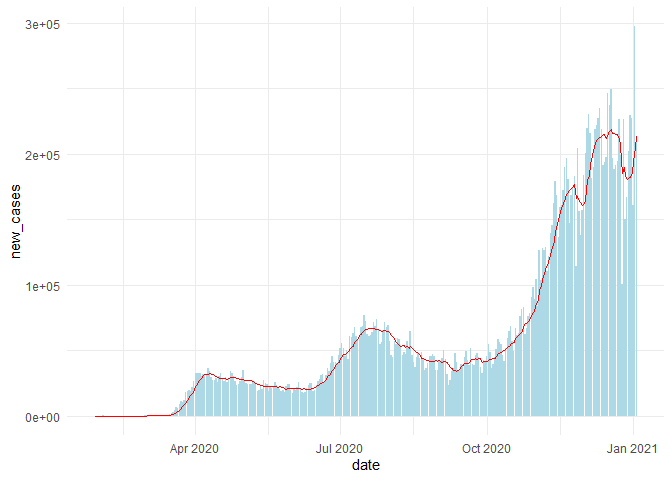
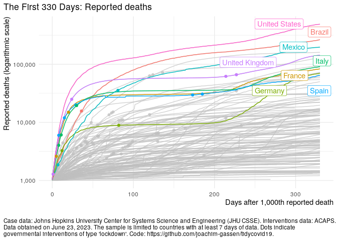
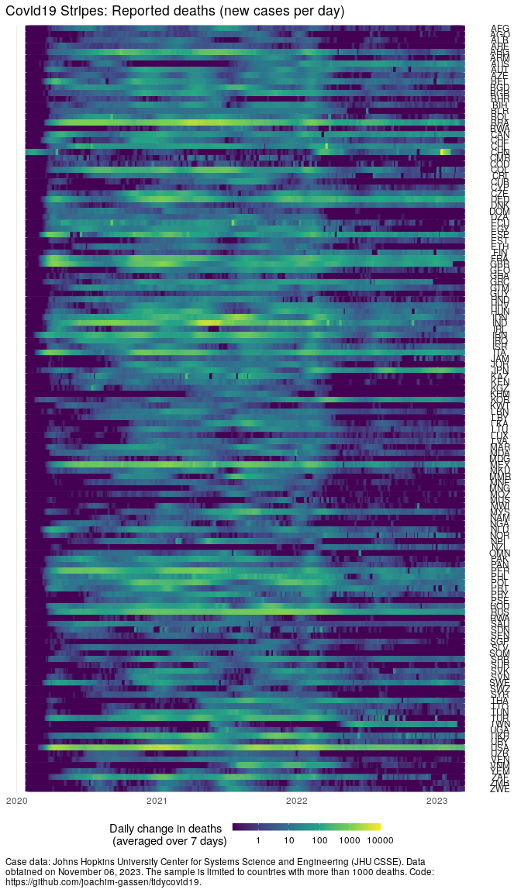
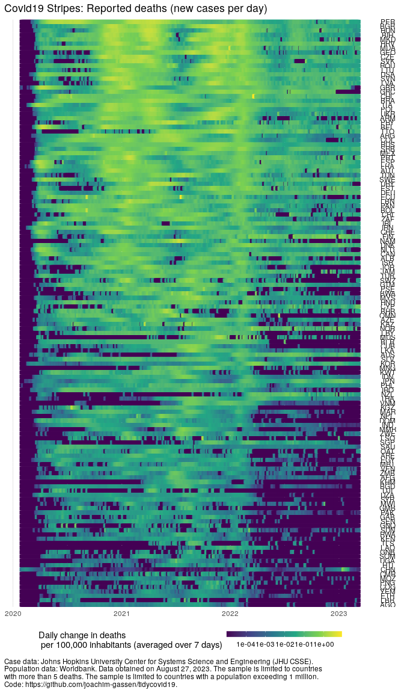
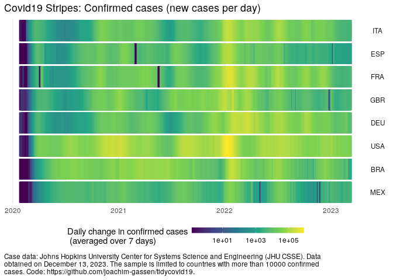
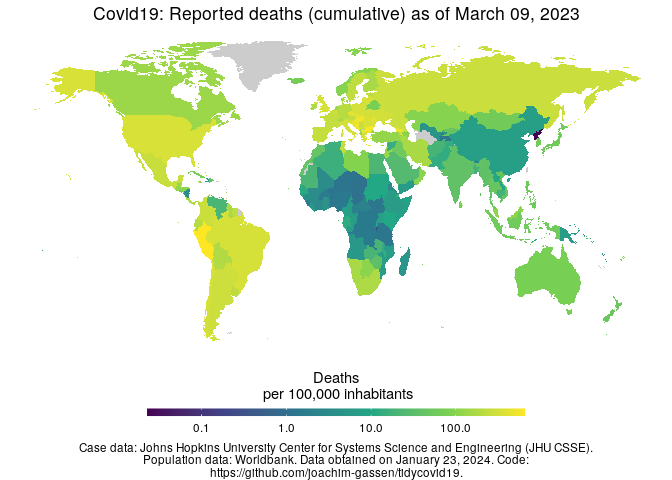
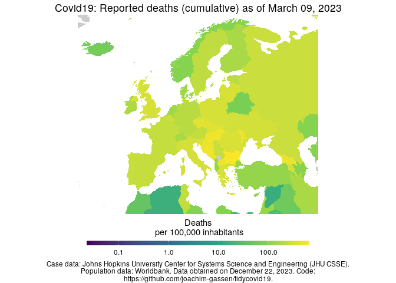

Joachim Gassen
Disclaimer
I am an applied economist studying the economic effects of regulatory interventions on corporate transparency and leading the Open Science Data Center (OSDC) of the TRR 266 Accounting for Transparency, which is funded by the German Science Foundation (DFG). The OSDC has the objective to make research transparent in a way that others can contribute and collaborate.
This is the spirit that motivated me to set up this package. I am clearly no epidemiologist so I will abstain from from providing infrastructure for analyzing the spread of the disease or estimating the effects of non-pharmaceutical interventions. Instead this package serves the purpose to facilitate the use of various Covid-19 related data sources with a special focus on non-pharmaceutical interventions.
In that way, I hope that it might be helpful for others that are interested in doing research on the Covid 19 pandemic by promoting the benefits of open science.
The Data
As of September 12, 2023 these are the included data sources
data(tidycovid19_data_sources)
df <- tidycovid19_data_sources %>% select(-id)
df$description[nrow(df)] <- paste(
"The merged dataset provided by the tidycovid19 R package. Contains data",
"from all sources mentioned above."
)
kable(df) %>% kableExtra::kable_styling()|
function_name |
description |
url |
last_data |
|---|---|---|---|
|
download_jhu_csse_covid19_data() |
The COVID-19 Data Repository by the Johns Hopkins University Center for Systems Science and Engineering (JHU CSSE) relies upon publicly available data from multiple sources that do not always agree. It is updated daily. The data comes in three data frames that you can select by the ‘type’ parameter. The ‘country’ data frame contains the global country-level data reported by JHU CSSE by aggregating over the regional data for countries that have regional data available. The ‘country_region’ data frame provides regional data for the countries that have regional data available (mosty Australia, Canada and China). The ‘us_county’ data frame reports the data for the U.S. at the county level. Please note: JHU stopped updating the data on March 10, 2023. |
2023-03-09 |
|
|
download_ecdc_covid19_data() |
Country-level weekly data on new cases and deaths provided by the European Centre for Disease Prevention and Control (ECDC). The data was updated daily until 2020-12-14 and contains the latest available public data on the number of new Covid-19 cases reported per week and per country. |
2023-09-04 |
|
|
download_owid_data() |
The Our World in Data team systematically collects data on Covid-19 testing, hospitalizations, and vaccinations from multiple national sources. Data points are collected with varying frequency across countries. The definition on what consitutes a ‘test’ varies, reflected by the variable ‘tests_units’ in the data frame. The vaccination data is currently only available based on ad hoc disclosures by a small set of countries. |
https://github.com/owid/covid-19-data/tree/master/public/data |
2023-09-10 |
|
download_wbank_data() |
The data frame reports current country-level statistics from the World Bank. The regional and income level classifications are also provided by the World Bank. ‘life_expectancy’ is measured in years at birth and ‘gdp_capita’ is measured in 2010 US-$. The original World Bank data items are (in the order how they are represented in the data frame) ‘SP.POP.TOTL’, ‘AG.LND.TOTL.K2’, ‘EN.POP.DNST’, ‘EN.URB.LCTY’, ‘SP.DYN.LE00.IN’, ‘NY.GDP.PCAP.KD’. When you set the parameter ‘var_def’ tot ‘TRUE’. the data comes in a list containing two data frames. The first contains the actual data, the second contains variable definitions. |
2023-09-11 |
|
|
download_acaps_npi_data() |
The #COVID19 Government Measures Dataset is provided by ACAPS. It puts together measures implemented by governments worldwide in response to the Coronavirus pandemic. Data collection includes secondary data review. The data is reported in event structure with an event reflecting a government measure. Measures are characterized as being either imposing/extending measures or lifting them and categorized in five categories with each category being split up in further sub-categories. Please note: ACAPS stopped updating the data on December 10, 2020 |
2021-01-04 |
|
|
download_oxford_npi_data() |
The data on the Oxford Coronavirus Government Response Tracker (OxCGRT) on non-pharmaceutical interventions comes in two data frames that you can select by setting the ‘type’ parameter. The ‘measures’ data frame reports data on governmental response measures as reported by the Oxford OxCGRT team. It is tidied by arranging its content by measure. All original country-day observations that are either initial or represent a value (not note) change from the previous day are included. Economic measures (E1-E4) are not included. The ‘index’ data frame reports the ‘Stringency Index’ and the ‘Legacy Stringency Index’ as calculated by the OxCGRT team based on their governance response measures in a country-day structure. Please note: As indicated on the homepage of the project, too a large extend the data is no longer updated after December 31, 2022 while data review processes continue. |
https://www.bsg.ox.ac.uk/research/research-projects/coronavirus-government-response-tracker |
2022-12-31 |
|
download_apple_mtr_data() |
Apple’s Mobility Trend Reports reflect requests for directions in Apple Maps. The data frame is organized by country-day and its data are expressed as percentages relative to a baseline volume on January 13th,
|
2022-04-12 |
|
|
download_google_cmr_data() |
Google’s Community Mobility Reports chart movement trends over time across different categories of places such as retail and recreation, groceries and pharmacies, parks, transit stations, workplaces, and residential. They show how visits and length of stays at different places change in percentages compared to a baseline (the median value, for the corresponding day of the week, during the 5-week period Jan 3 to Feb 6, 2020). The data comes in three data frames that you can select by the ‘type’ parameter. The ‘country’ data frame contains country-day level data. The ‘country_region’ data frame provides regional data for the countries for which Google reports regional data. The ‘us_county’ data frame reports daily data for the U.S. at the county level. Please note: Google stopped providing that data on October 15, 2022 |
2022-10-15 |
|
|
download_google_trends_data() |
Data are Google Search Volume (GSV) measures as provided by Google Trends API, with the default search term ‘coronavirus’. The data comes in four data frames that you can select by the ‘type’ parameter and the sample period comprises Jan 1, 2020 up to date. The ‘country’ data frame lists GSV by country, to assess which country on average uses the search term most often over the sample period. The ‘country-day’ data frame reports daily search volume data for all countries that show up in the ‘country’ data frame. Each value is relative within country, meaning that values across countries cannot be compared directly. The ‘region’ and ‘city’ data frames list the relative GSV across regions and city within countries when provided by Google Trends. Keep in mind that within each data frame GSV are relative measures with a maximum of 100 indicating the highest search volume. This implies that GSV measures are not comparable across data frames. |
2023-09-03 |
|
|
download_merged_data() |
The merged dataset provided by the tidycovid19 R package. Contains data from all sources mentioned above. |
2023-09-11 |
How to Use the Package
The idea is simple. Load the data using the functions above and code away. So, for example:
# Suggestion by AndreaPi (issue #19)
library(tidyverse)
library(tidycovid19)
library(zoo)
df <- download_merged_data(cached = TRUE, silent = TRUE)
df %>%
filter(iso3c == "USA") %>%
mutate(
new_cases = confirmed - lag(confirmed),
ave_new_cases = rollmean(new_cases, 7, na.pad=TRUE, align="right")
) %>%
filter(!is.na(new_cases), !is.na(ave_new_cases)) %>%
ggplot(aes(x = date)) +
geom_bar(aes(y = new_cases), stat = "identity", fill = "lightblue") +
geom_line(aes(y = ave_new_cases), color ="red") +
theme_minimal()
The data comes with two meta data sets that describe the data. The data frame tidycovid19_data_sources listed above provides short descriptions and links for each data source used by the package. The data frame tidycovid19_variable_defintions provides variable definitions for each variable included in the merged country-day data frame provided by download_merged_data():
data(tidycovid19_variable_definitions)
df <- tidycovid19_variable_definitions %>%
select(var_name, var_def)
kable(df) %>% kableExtra::kable_styling()|
var_name |
var_def |
|---|---|
|
iso3c |
ISO3c country code as defined by ISO 3166-1 alpha-3 |
|
country |
Country name |
|
date |
Calendar date |
|
confirmed |
Confirmed Covid-19 cases as reported by JHU CSSE (accumulated) |
|
deaths |
Covid-19-related deaths as reported by JHU CSSE (accumulated) |
|
recovered |
Covid-19 recoveries as reported by JHU CSSE (accumulated) |
|
ecdc_cases |
Covid-19 cases as reported by ECDC (accumulated, weekly post 2020-12-14) |
|
ecdc_deaths |
Covid-19-related deaths as reported by ECDC (accumulated, weekly post 2020-12-14) |
|
total_tests |
Accumulated test counts as reported by Our World in Data |
|
tests_units |
Definition of what constitutes a ‘test’ |
|
positive_rate |
The share of COVID-19 tests that are positive, given as a rolling 7-day average |
|
hosp_patients |
Number of COVID-19 patients in hospital on a given day |
|
icu_patients |
Number of COVID-19 patients in intensive care units (ICUs) on a given day |
|
total_vaccinations |
Total number of COVID-19 vaccination doses administered |
|
soc_dist |
Number of social distancing measures reported up to date by ACAPS, net of lifted restrictions |
|
mov_rest |
Number of movement restrictions reported up to date by ACAPS, net of lifted restrictions |
|
pub_health |
Number of public health measures reported up to date by ACAPS, net of lifted restrictions |
|
gov_soc_econ |
Number of social and economic measures reported up to date by ACAPS, net of lifted restrictions |
|
lockdown |
Number of lockdown measures reported up to date by ACAPS, net of lifted restrictions |
|
oxcgrt_stringency_index |
Stringency index as provided by the Oxford COVID-19 Government Response Tracker |
|
oxcgrt_stringency_legacy_index |
Legacy stringency index based on old data format (prior April 25, 2020) as provided by the Oxford COVID-19 Government Response Tracker |
|
oxcgrt_government_response_index |
Overall government response index as provided by the Oxford COVID-19 Government Response Tracker |
|
oxcgrt_containment_health_index |
Containment and health index as provided by the Oxford COVID-19 Government Response Tracker |
|
apple_mtr_driving |
Apple Maps usage for driving directions, as percentage*100 relative to the baseline of Jan 13, 2020 |
|
apple_mtr_walking |
Apple Maps usage for walking directions, as percentage*100 relative to the baseline of Jan 13, 2020 |
|
apple_mtr_transit |
Apple Maps usage for public transit directions, as percentage*100 relative to the baseline of Jan 13, 2020 |
|
gcmr_retail_recreation |
Google Community Mobility Reports data for the frequency that people visit retail and recreation places expressed as a percentage*100 change relative to the baseline period Jan 3 - Feb 6, 2020 |
|
gcmr_grocery_pharmacy |
Google Community Mobility Reports data for the frequency that people visit grocery stores and pharmacies expressed as a percentage*100 change relative to the baseline period Jan 3 - Feb 6, 2020 |
|
gcmr_parks |
Google Community Mobility Reports data for the frequency that people visit parks expressed as a percentage*100 change relative to the baseline period Jan 3 - Feb 6, 2020 |
|
gcmr_transit_stations |
Google Community Mobility Reports data for the frequency that people visit transit stations expressed as a percentage*100 change relative to the baseline period Jan 3 - Feb 6, 2020 |
|
gcmr_workplaces |
Google Community Mobility Reports data for the frequency that people visit workplaces expressed as a percentage*100 change relative to the baseline period Jan 3 - Feb 6, 2020 |
|
gcmr_residential |
Google Community Mobility Reports data for the frequency that people visit residential places expressed as a percentage*100 change relative to the baseline period Jan 3 - Feb 6, 2020 |
|
gtrends_score |
Google search volume for the term ‘coronavirus’, relative across time with the country maximum scaled to 100 |
|
gtrends_country_score |
Country-level Google search volume for the term ‘coronavirus’ over a period starting Jan 1, 2020, relative across countries with the country having the highest search volume scaled to 100 (time-stable) |
|
region |
Country region as classified by the World Bank (time-stable) |
|
income |
Country income group as classified by the World Bank (time-stable) |
|
population |
Country population as reported by the World Bank (original identifier ‘SP.POP.TOTL’, time-stable) |
|
land_area_skm |
Country land mass in square kilometers as reported by the World Bank (original identifier ‘AG.LND.TOTL.K2’, time-stable) |
|
pop_density |
Country population density as reported by the World Bank (original identifier ‘EN.POP.DNST’, time-stable) |
|
pop_largest_city |
Population in the largest metropolian area of the country as reported by the World Bank (original identifier ‘EN.URB.LCTY’, time-stable) |
|
life_expectancy |
Average life expectancy at birth of country citizens in years as reported by the World Bank (original identifier ‘SP.DYN.LE00.IN’, time-stable) |
|
gdp_capita |
Country gross domestic product per capita, measured in 2010 US-$ as reported by the World Bank (original identifier ‘NY.GDP.PCAP.KD’, time-stable) |
|
timestamp |
Date and time where data has been collected from authoritative sources |
There are more examples on how to code in the code file in the main directory with the revealing name code_examples.R. Explore and reuse!
Visualization
The focus of the package lies on data collection and not on visualization as there are already many great tools floating around. Regardless, there are three functions that allow you to visualize some of the key data that the package provides.
Plot Covid-19 Spread over Event Time
The function plot_covid19_spread() allows you to quickly visualize the spread of the virus in relation to governmental intervention measures. It is inspired by the insightful displays created by John Burn-Murdoch from the Financial Times and offers various customization options.
#remotes::install_github("joachim-gassen/tidycovid19")
library(tidycovid19)
merged <- download_merged_data(cached = TRUE, silent = TRUE)
plot_covid19_spread(
merged, highlight = c("ITA", "ESP", "GBR", "FRA", "DEU", "USA", "BRA", "MEX"),
intervention = "lockdown", edate_cutoff = 330
)
Plot Covid-19 Stripes
Another option to visualize the spread of Covid-19, in particular if you want to compare many countries, is to produce a stripes-based visualization. Meet the Covid-19 stripes:

Again, the function comes with many options. As an example, you can easily switch to a per capita display:
plot_covid19_stripes(
per_capita = TRUE,
population_cutoff = TRUE,
sort_countries = "magnitude"
)
Or single out countries that you are interested in
plot_covid19_stripes(
type = "confirmed",
countries = c("ITA", "ESP", "FRA", "GBR", "DEU", "USA", "BRA", "MEX"),
sort_countries = "countries"
)
Map Covid-19
Finally, I also included a basic mapping function. map_covid19() allows you to map the spread of the virus at a certain date both world-wide …
map_covid19(merged, cumulative = TRUE, per_capita = TRUE)
… or for certain regions.
map_covid19(merged, type = "deaths", cumulative = TRUE, per_capita = TRUE, region = "Europe") 
If you have enough time (takes several minutes), you can also create an animation to visualize the spread of the virus over time.
df <- merged %>% filter(!is.na(confirmed))
map_covid19(
df, type = "confirmed", per_capita = TRUE, dates = unique(df$date)
)Again, you can customize the data that you want to plot and of course you can also modify the plot itself by using normal ggplot syntax.
Shiny App
Sorry, I could not resist. The options of the plot_covid19_spread() make the implementation of a shiny app a little bit to tempting to pass. The command shiny_covid19_spread() starts the app. Click on the image to be taken to the online app. You can use it to customize your plot_covid19_spread() display as it allows copying the plot generating code to the clipboard, thanks to the fine {rclipboard} package. You can now also customize the app by providing plot_covid19_spread() options as a list to the plot_options parameter.

As the shinyapps.io server has had some issues with exhausting connections, you can also use this alternative server.
Blog posts
The blog posts are mostly dated. I am leaving the links here for reference:
An intro blog post providing a quick walk-through of the package.
A blog post on the OWID vaccination data.
A blog post on the new visuals of the package.
A blog post on the visualizer degrees of freedom that are inherent in a plot of the Covid-19 spread.
A blog post on the PDF scraping of the new Google Covid-19 Community Movement Reports.
A somewhat dated blog post comparing the ACAPS and Oxford data on governmental interventions.
An older blog post that showcases some descriptive visuals to see what one can do with the data retrieved by this package.
Why yet another package on Covid-19?
There are several packages that provide data and infrastructure related to Covid-19. Two prominent cases are:
-
{nCov2019}: This package has a focus on Chinese data but also contains data on other countries and regions. It contains a shiny dashboard. -
{conronavirus}: This package provides the Johns Hopkins University CSSE dataset together with a dashboard
Additional R related resources on Covid-19 can be found here and here.
Other than the packages mentioned above, the key objective of the {tidycovid19} package is to provide transparent access to various data sources at the country-day level, including data on governmental interventions and on behavioral response of the public. It does not contain any data per se. Instead, it provides functions to pull data from publicly available authoritative sources. The sources and the data are documented by additional data frames included in the package. While the combined data frame generated by download_merged_data() aggregates data at the country-day level, some functions also provide sub-country level data on request.
For those interested in speedy downloads it alternatively provides the option to download from the cached data in this repo (stored in the directory cached_data). The cached data is updated daily.